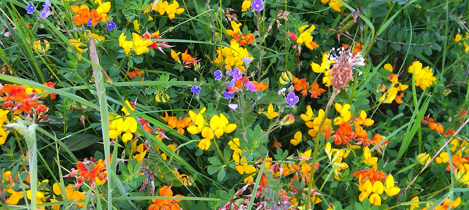
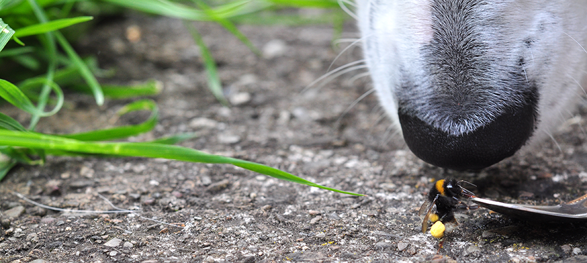
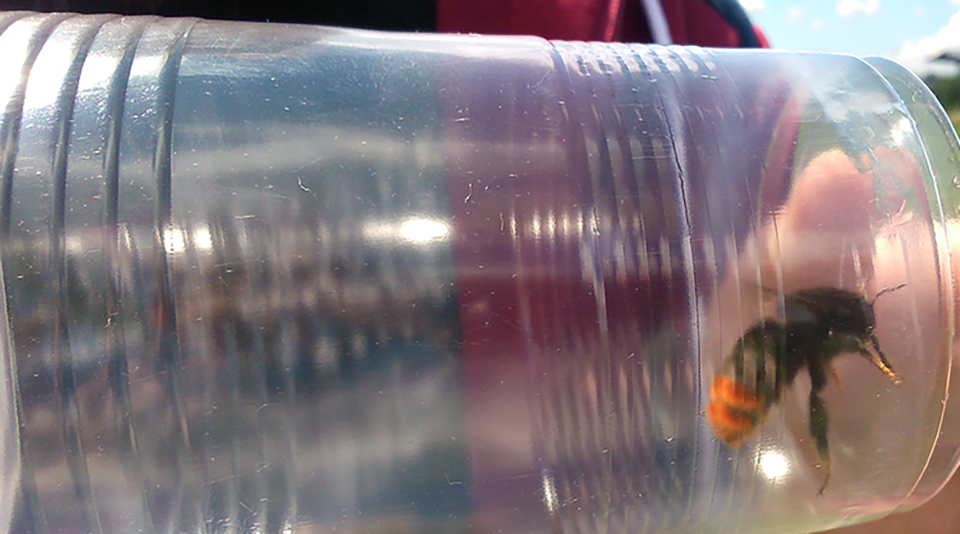

How to Help
Go Wild!
Bees need a wide variety of flowers throughout the year for food. In a day a bee will have to visit around 6000 flowers! Leaving your lawn grow wild or even having a section for the native wildflowers to take hold will be a great help. You can plant wildflowers too but often the native plants that grow here are all that the Bumblebees need. Plants we call we tend to cut away and call weeds like dandelions, clover, ivy, knapweed, etc. are great sources of food for bees. Willow and fruit trees are also great. A little bit of wildness in your garden looks beautiful and will be a haven for bees and other insects.The flowers above are all native wildflowers that were able to flourish in an area left wild.
Bumblebees are suffering a homlessness crisis. They need long grass to build their homes. They often nest in small rodent holes and prefer long grass at the surface.
Bees get thirsty too
After a long day of flying back and forth collecting pollen sometimes bumblebees will get too tired to go on. Their pollen baskets may be full and they're just to exhausted to make it back to the nest. A handy pick-me-up is to give a worn out bee a drink of sugary water. Dissolve some sugar in a little water and put it in a very small container that the bee can get too. It's best not to use honey though as it can have diseases in it that could harm the bee. Here is one gal who we restored back to herself after a drink and a rest. I hope she made it home safe with her heavy loads.
Get to a bumblebee monitoring workshop near you!
Biodiversity Ireland are always looking for people to submit sightings and get involved. There is a wealth of information over on their site. They carry our regular workshops where you can learn how to identify bees. They are looking for people to walk a set route, around 1-2 km once a month from March through to October and record what bees they see, whether queen, worker or male and to submit this data. This data is invaluable to them to gauge what's happening with our native bumblebee populations and enables them to put in place plans to help. They currently have an All Ireland Pollinator Plan which is well worth taking a look at. There are many ways to get involved at both and individual and commnunity level.You can submit casual records too. Every little bit helps!